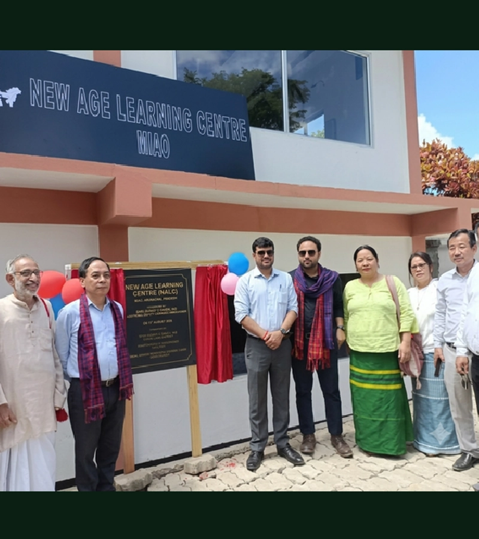
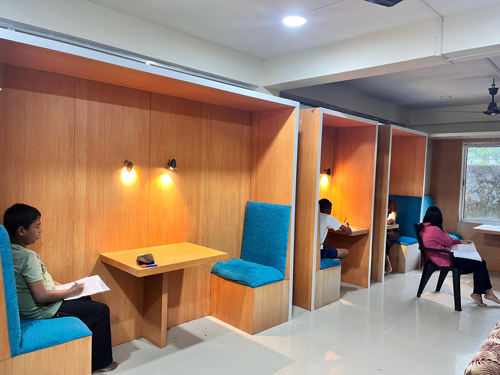
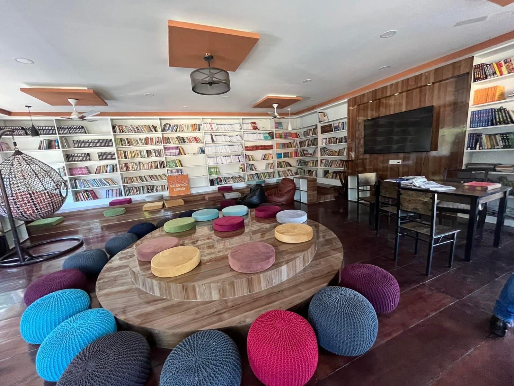
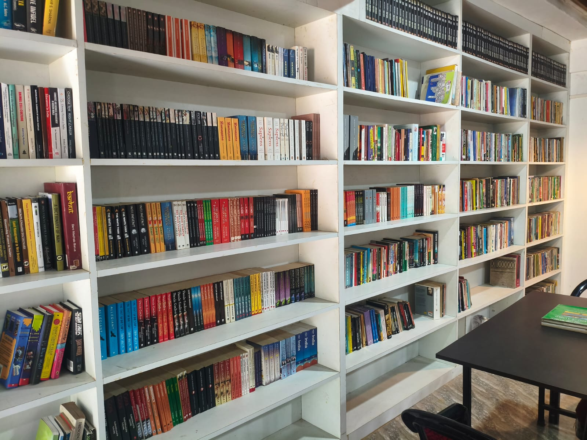

On 20 October 2000, the institution was upgraded from Block Library to Sub Divisional Library Miao, extending its public-library role across the Miao sub-division. It continued to provide access to reading, reference and learning resources for students, research scholars, local residents and communities across the surrounding area.
Its purpose was rooted in accessibility: to connect people with knowledge, support education and provide a dependable public space for study, reading and intellectual engagement.
The foundation stone of the new library building was laid on 7 June 2021, marking the next major stage in the institution's physical development.

The Sub Divisional Library Miao — reimagined as the New Age Learning Centre (NALC) — is the brainchild of Miao Additional Deputy Commissioner Shri Sunny K. Singh. The concept created a modern public learning space where reading, technology, academic preparation and creative exploration could happen together.
The NALC model expanded the library's role beyond conventional reading services, bringing together children, teenagers, students, competitive-exam aspirants and lifelong learners in an environment designed around curiosity, opportunity and learning. It also developed into an interactive hub for local schools and students, including dedicated library and reading periods.
The New Age Learning Centre was inaugurated on 7 May 2022 by Hon. Minister Shri Kamlung Mossang.

Today, NALC Miao functions as a modern learning and knowledge centre at the Sub Divisional Library, Miao. It brings together reading, technology, academic preparation and community learning in one public space.
The centre supports local schools and students, encourages dedicated library and reading periods, and provides an environment for children, teenagers, competitive-exam aspirants, students and lifelong learners.
Its programmes and learning initiatives include OIL Super 30 residential classes for JEE and NEET aspirants and Project Safal, aimed at improving board-examination outcomes. The centre also provides modern learning infrastructure including tablets, computers, e-readers, a virtual reality headset and free Wi-Fi.
Academic Support
Resources and programmes supporting school and competitive-exam preparation.
Digital Access
Technology-enabled learning through connected digital resources and devices.
Open Learning Space
A shared environment for students, readers and lifelong learners.



